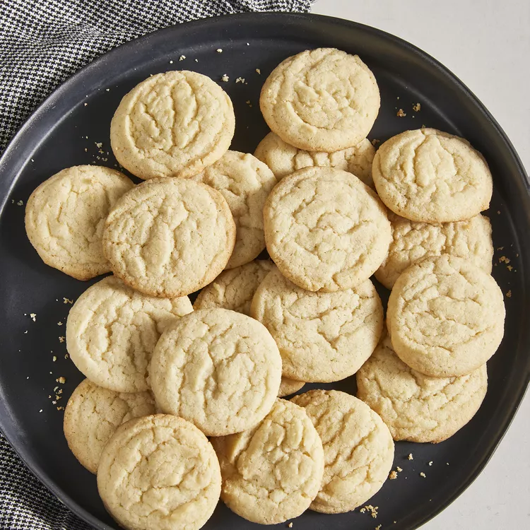

Easy Sugar Cookies

Description
This sugar cookie recipe is quick and easy to make.
They are really good as-is or with candies mixed in.
My friend uses chocolate mints on top, and they're great!
Satisfy your sweet tooth with this top-rated sugar cookie recipe.
It comes together with just a few ingredients you likely already have on hand
— and the sugar cookies turn out perfect every time.
Ingredients
- 2 ¾ cups all-purpose flour
- 1 teaspoon baking soda
- ½ teaspoon baking powder
- 1 cup butter, softened
- 1 ½ cups white sugar
- 1 egg
- 1 teaspoon vanilla extract
Directions
- Preheat the oven to 375 degrees F (190 degrees C).
- Stir flour, baking soda, and baking powder together in a small bowl.
- Beat sugar and butter together in a large bowl with an electric mixer until smooth.
Beat in egg and vanilla. Gradually blend in flour mixture.
Roll dough into walnut-sized balls and place 2 inches apart onto ungreased baking sheets.
- Bake in the preheated oven until edges are golden, 8 to 10 minutes.
Cool on the baking sheets briefly before removing to a wire rack to cool completely.